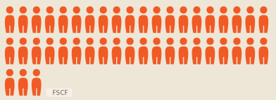
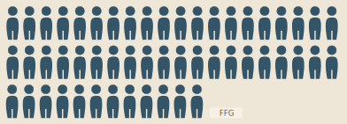
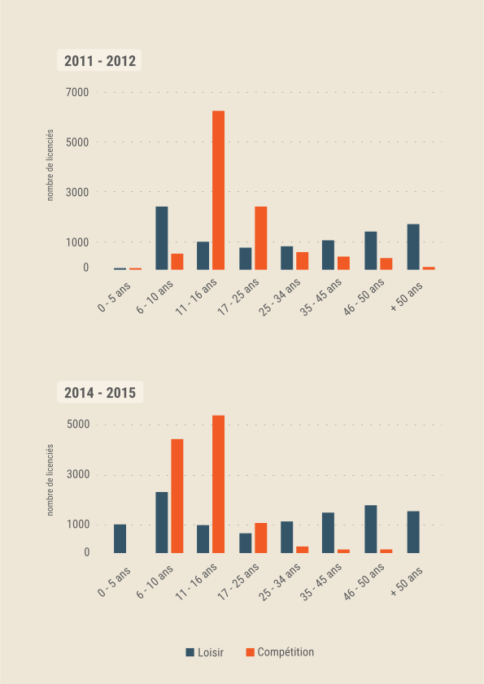

La FSCF est née en 1898 des patronages catholiques et proposait des pratiques gymniques dans un but hygiénique
et de préparation militaire. La pratique s’adressait alors essentiellement
à la jeunesse et plus particulièrement aux jeunes hommes afin
de leur inculquer les valeurs traditionnelles.
En 1932, l’association est alors reconnue d’utilité publique
sous
le nom de Fédération Gymnique et Sportive des patronages de
France.
Depuis, la pratique s’est fortement développée et
diversifiée même
si la gymnastique reste l’activité phare de
l’association.
Répartition des gymnastes
en Pays de la Loire
%
% 
% 
En effet, aujourd’hui, la FSCF
représente
43% des gymnastes
licenciés en Pays de la Loire avec une
pratique qui s’est féminisée,
au cours du 20ème siècle, de façon
très importante : 9868 licenciées en
GAF et GRS
contre 1350 licenciés en
Gymnastique Artistique Masculine. La
fédération propose également
de
nombreuses autres activités
permettant
de répondre aux attentes
d’un public très large avec des valeurs
éducatives toujours
très présentes.
Inversion de la tendance
On ne s’imagine pas qu’il fut un temps où la gymnastique
s’adressait aux hommes ...

Papa, Maman,
j’arrête la compét'
Actuellement, de nombreuses pratiques hybrides
se développent offrant plus de libertés aux pratiquants. Ces pratiques attirent plus particulièrement un public jeune. D’un autre côté on constate qu’au sein de la FSCF des Pays de La Loire et de manière générale,
les jeunes sont très nombreux à posséder une licence compétition entre onze et seize ans (4635 licences compétions à la FSCF) puis qu’une baisse très importante apparaît à partir de seize ans (1034 licences compétition à la FSCF). Cet arrêt peut être dû à plusieurs faits.
Tout d’abord vers l’âge de seize ans de nombreux jeunes partent au lycée, celui-ci leur impose un emploi du temps et une charge de travail plus importante.
L’établissement peut également être éloigné de leur lieu de pratique. Il devient alors difficile de maintenir
un rythme régulier d’entraînement pour pouvoir poursuivre la compétition. C’est également la période
de l’adolescence avec le rejet des règles et de l’autorité, le cadre fédéral peut alors être perçu comme trop contraignant, ce qui les pousse à se tourner
vers les nouvelles pratiques qui le sont moins.
Nous pensons donc que la FSCF devrait porter
son intérêt vers le développement des pratiques hybrides émergentes afin de garder les jeunes dans le giron
de la fédération.
Qui monte ? Qui descend ?
L’évolution du nombre de licenciés (en %) sur une olympiade
pour toutes les catégories de sports proposées par la FSCF
au niveau régional.
Comparez l’évolution du nombre de licenciés en pourcentage
avec le diagramme ci-dessous pour un aperçu plus détaillé.
Top / Flop par département
Cliquez sur un département pour afficher les activités proposées pour la FSCF, en hausse ou en baisse, en nombre de licenciés entre 2011-2015.